Learning Objectives
After completing this lesson, you’ll be able to:
- Publish an FME parameter inside a custom transformer.
- Create a new user parameter inside a custom transformer.
- Expose attributes inside a custom transformer.
- Use an exposed attribute inside a custom transformer.
Resources
- Starting workspace
- C:\FMEData\Workspaces\AdvancedDataTransformation\parameterize-a-custom-transformer.fmw
- Complete workspace
- C:\FMEData\Workspaces\AdvancedDataTransformation\parameterize-a-custom-transformer-complete.fmw
- Complete workspace
- C:\FMEData\Workspaces\AdvancedDataTransformation\parameterize-a-custom-transformer-complete-advanced.fmw
- VancouverNeighborhoods.kml
- C:\FMEData\Data\Boundaries\VancouverNeighborhoods.kml
Exercise

Sven has built the DensityEvaluator custom transformer that calculates density for a given area. His workspace reads Vancouver neighborhoods data and writes population density values for 2001 and 2011. Because he set the Attribute References parameter to Handle With User Parameters, the transformer already handles the schema correctly. Sven wants to make it more generic, so other teams can choose their own output attribute name and units.
In this exercise, you will:
- Publish an FME parameter so the transformer user can name the output attribute.
- Create a Choice user parameter and use it inside the custom transformer.
- Run the workspace with different units to confirm the results.
1) Open Starting Workspace
- Start FME Workbench (2026.2 or later).
- Open your starting workspace (C:\FMEData\Workspaces\AdvancedDataTransformation\parameterize-a-custom-transformer.fmw).
The workspace currently holds two instances of the custom transformer, and both produce an attribute with the same name, DensityResult. It would be more useful if the user of the custom transformer could define that name themselves.
- Observe that both instances of the custom transformer produce an attribute named
DensityResult.
- This is why the two instances have sat in parallel streams so far. In series in the same stream, the results of the second custom transformer would overwrite the first results.
- Click the DensityEvaluator tab to switch the canvas to the custom transformer definition.
- Open the parameters for the ExpressionEvaluator.
- Next to Result (
DensityResult), click the drop-down and choose User Parameter > Create User Parameter.
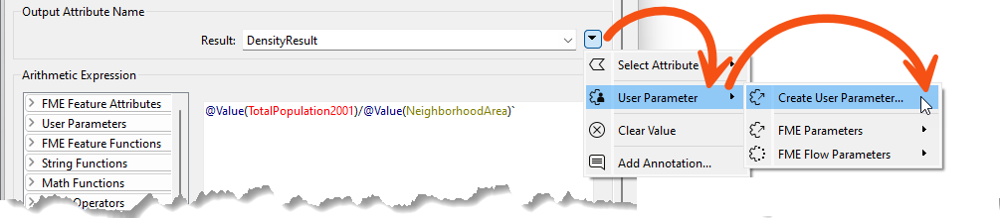
- When prompted, click OK and accept the default settings.
- In the Main tab, verify the parameters for each DensityEvaluator instance now include an option to set the name of the Result.
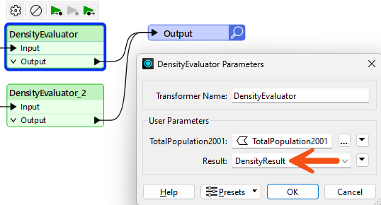
- Move the instances so they are joined in sequence rather than in parallel.
- Change the two output attribute names from DensityResult to
PopulationDensity2001 and PopulationDensity2011.
- At first glance it might appear that you have reverted the custom transformer to where you started. To an extent that is true. The point is that you now have a solution that can work in other scenarios, where something other than population density is being calculated.
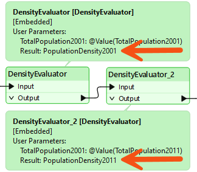
3) Set Parameter Labels
The label for the attribute to analyze is currently TotalPopulation2001, which is specific to this one scenario. Adding a Population attribute to the transformer's input prompts the transformer user to choose an attribute that supplies the population values. That creates a new POPULATION user parameter, which the ExpressionEvaluator then needs to use.
- In the DensityEvaluator tab, double-click Input.
- The Edit Transformer Input dialog opens.
- Click Add.
- In Name, enter
Population.
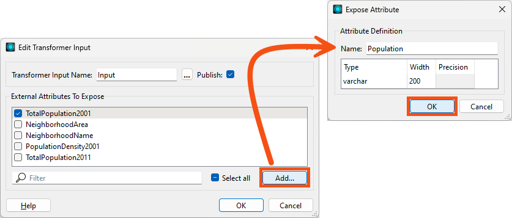
- Click OK.
- Uncheck TotalPopulation2001.
- You will be using the new Population user parameter instead.
- Click OK.
- Double-click the ExpressionEvaluator and change the Arithmetic Expression to
$(POPULATION)/@Value(NeighborhoodArea).
- The custom transformer now uses the user's chosen attribute as the population value.
- In the Main tab, set Population to TotalPopulation2001 and TotalPopulation2011 for the two instances, respectively.
- Until you do, both instances show as invalid, because Population is a required attribute.
- Run the workspace.
- In the output, verify the density values are still correct.
4) Implement Units Selection
The workspace currently calculates the number of items, in this exercise persons, per square kilometer of land. That suits the original scenario, but other uses of this transformer might need different units. A Choice parameter lets the user pick the units they want.
- In the DensityEvaluator tab, in the Navigator, right-click User Parameters.
- Select Manage User Parameters.
- Click the green plus icon.
- Choose type Choice.
- Fill in the dialog:
- Parameter Identifier:
DensityUnits
- Label:
Density Units:
- Required: checked
- Show Label: checked
- Visibility: Always Show
- Choice Configuration: Dropdown
- Choice Configuration table: make two entries, one per row
- Value
1, Display Name Sq Meters
- Value
0.000001, Display Name Sq Kilometers
- To save you counting, that's five zeros after the decimal place.
- Allow Users To Enter a Custom Value: No
- Value Assignment: Hide Parameter Menu Button
- Default Value: Sq Kilometers
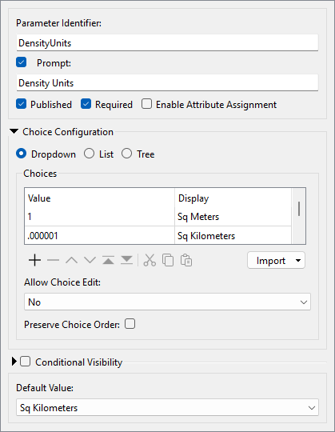
- Click OK.
- The dialog closes and the user parameter is added.
5) Apply the Units Parameter
You have defined a user parameter for the units, but the custom transformer does not use it yet. The AreaCalculator's Multiplier field is where the chosen units take effect.
- In the DensityEvaluator tab, open the parameters for the AreaCalculator.
- Next to Multiplier, click the drop-down and select DensityUnits.
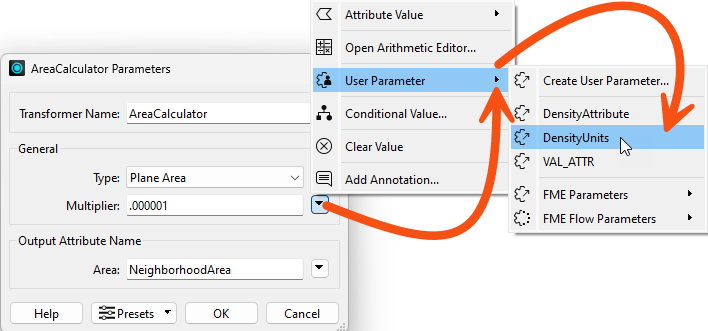
- In the Main tab, observe that the custom transformer now has a parameter for the end user to select the output density units.
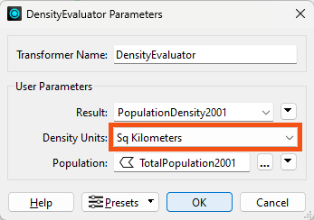
- Run the workspace using different units and compare the results.
- Because you chose Hide Parameter Menu Button, the end-user cannot use an attribute to set the Density Units.
Tips
- Feel free to add any other units that you want. The units for this coordinate system are in meters, which is why the value is 1, so other units need to be a fraction of that. Square miles would be 0.0000003861.
- When developing custom transformers, it's a good idea to think as generically as possible. This transformer assumes the input data will use meters as a unit. To accept data with other units, you would have to account for that in the transformer and its user parameters.
Challenge
Your DensityEvaluator now lets the user name the output attribute and choose the density units. One thing it cannot do is weight the calculation, so every neighborhood counts equally no matter how reliable its figures are. Your source data has no field you could reasonably weight by, so you will need to generate a test attribute before you can prove the weighting works.
In this challenge, you will:
- Add a RandomNumberGenerator to generate a test weighting attribute.
- Expose that attribute inside the custom transformer and make it optional.
- Use a Tester to route only the records that have a weighting value to their own ExpressionEvaluator.
- Adjust the equation to apply the weighting, and confirm the unweighted results are unchanged.
Challenge Answer: Open after attempting the challenge.
The weighting comes from an incoming attribute, which means the custom transformer has to handle it in its schema. You generate a test attribute in the workspace, expose it inside the transformer, then branch on whether the user supplied it.
1) Add RandomNumberGenerator
Your source data has no field you could reasonably use to weight the output, so you generate one.
- In the Main tab, add a RandomNumberGenerator to the canvas.
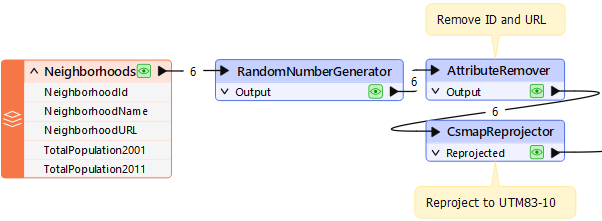
- Fill in the RandomNumberGenerator parameters:
- Minimum Value:
0.1
- Maximum Value:
1
- Decimal Places:
1
- Generated Number:
WeightedAttribute
- Click OK.
2) Expose the Attribute in the Custom Transformer
The new attribute exists in the workspace but not inside the custom transformer. Exposing it on the Input port makes it available to the transformer's logic, and also creates a user parameter for it.
- In the DensityEvaluator tab, open the parameters for the Input port object.
- Check the
WeightedAttribute attribute.
- This exposes the attribute in the custom transformer definition and creates a
WEIGHTEDATTRIBUTE user parameter.
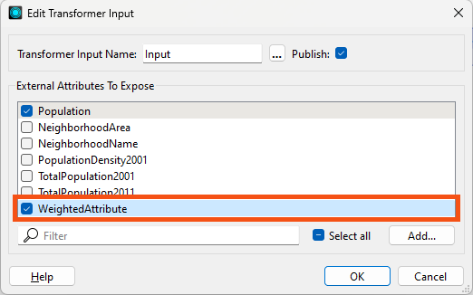
- In the Navigator, right-click
WEIGHTEDATTRIBUTE and choose Manage User Parameters.
- For WeightedAttribute, set the following:
- Required: unchecked
- Default Value: cleared
- Weighting should not be compulsory, as the user might not have an attribute to weight the results by.
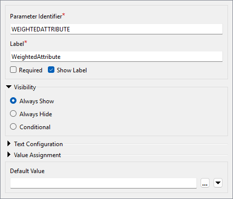
3) Duplicate the ExpressionEvaluator
Records that carry a weighting value need a different equation from those that do not, so the transformer needs two ExpressionEvaluators and a Tester to choose between them.
- Copy the existing ExpressionEvaluator and connect the copy in parallel to the current one.
- Add a Tester beforehand, where the Passed port goes to one ExpressionEvaluator and the Failed port goes to the other.
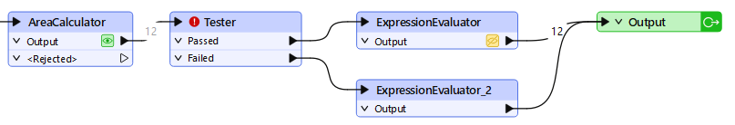
4) Set Up the Tester
The test decides which records get weighted. Records with a weighting value greater than zero take the Passed port.
- Open the Tester parameters and make a test for
WeightedAttribute > 0.
- Ensure you select the attribute, not the user parameter. You can tell which is which based on the icon.
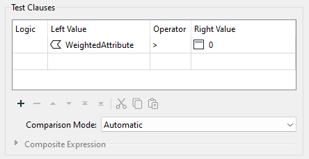
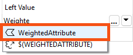
5) Adjust the Equation
Now that the attribute is exposed in the custom transformer, you can use it in the equation that calculates density. The ExpressionEvaluator connected to the Tester's Passed port is the one that handles the weighted records.
- Open the parameters for the ExpressionEvaluator connected to the Tester's Passed port.
- Change the equation to
($(POPULATION)*@Value(WeightedAttribute))/@Value(NeighborhoodArea).
- This multiplies the existing Population attribute by the WeightedAttribute, with parentheses around that part of the expression.
- Save the parameter changes.
- Run the workspace without providing weights.
- In the output, verify the result is unchanged.
- Change the custom transformer parameters to use WeightedAttribute, then run the workspace again.
- The results differ every time, because you generate the weighted attribute randomly at runtime.
- Experiment with selecting the weighted attribute in the main canvas, and with not selecting it.
- When you select no attribute, the records pass through the Failed port and no weighting is used in the calculation.
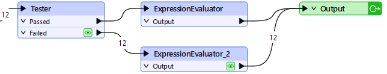
It may seem odd, especially to experienced users, that you use the attribute in the expression instead of the user parameter. This is part of how FME handles the behavior automatically. It prevents the author from needing to know about user parameters and how to use them, and it uses hidden functionality to replace the attribute with the user parameter wherever necessary.
🔍 Check your results
Open the completed workspace: Completed Advanced Workspace (C:\FMEData\Workspaces\AdvancedDataTransformation\parameterize-a-custom-transformer-complete-advanced.fmw).